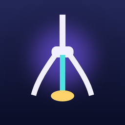

クレーンゲーム練習クレーンゲーム練習 - 橋渡しもぬいぐるみも、アームの操作を練習
2本爪の橋渡しの箱と、3本爪のぬいぐるみを、物理演算で動く台で練習するアプリです。台の見方、アームの止め方、やめどきを、レッスンで順番に試せます。
ゲーム内の硬貨は仮想のもので、実際のお金はかかりません。景品もゲーム内のものです。
主な機能
- 橋渡しの台（2本爪）とぬいぐるみの台（3本爪）。ボタン①②③でアームを動かします
- 全20レッスン。台の見方、寄せ方、お店での判断を、順番に試せます
- ヒントの量を、遊びながら変えられます。手本を見ることもできます
- 1挑戦ごとに、止めた位置のずれと手の年表を確認できます。リプレイは、角度を変えて、スローで見られます
- お店の台では、今日の予算（仮想硬貨）の範囲で遊べます。1個あたりの金額が記録に残ります
- 獲得した景品は、棚に集まります
よくある質問
実際のお金はかかりますか？
ゲーム内の硬貨は仮想のもので、実際のお金はかかりません。景品も、ゲーム内のものです。お店で景品が届くことはありません。アプリ内課金はありません。
広告はどんな時に出ますか？
レッスンに合格して次の画面へ移る時などに、画面全体に出る広告（インタースティシャル）が出ることがあります。プレイ中は出ません。最初の起動では出ません。広告を見ると今日の予算が増える「リワード広告」は、見たい時だけ選べる任意の広告です。
広告が気になる、不適切な広告が出た
広告の内容や、広告の個人化については、下の問い合わせフォームから知らせてください。広告の個人化は、iPhone の「設定」→「プライバシーとセキュリティ」→「トラッキング」からいつでも変えられます。地域によっては、アプリの「設定」に「プライバシー設定（広告の同意）」が出て、同意をやり直せます。
トラッキングの許可を断ると、使えない機能がありますか？
ありません。機能はすべて同じです。広告が、興味に合わせたものではなくなるだけです。
利用状況の計測を止めたい
「設定」の「利用状況の計測」をオフにすると、計測を止めます。
進み具合は、機種変更で引き継げますか？
進み具合は、お使いの iPhone の中にだけ保存しています。引き継ぎの機能はありません。
進み具合を消したい
「設定」の「進行をリセット」で、星・棚・記録を消せます。アプリを削除しても消えます。
練習で、お店の台でも取れるようになりますか？
お店の台と同じ操作・同じ料金の感覚で練習できます。お店の台での結果を約束するものではありません。
年齢の制限はありますか？
App Store の年齢区分は 4+ の見込みです。広告の内容は、全年齢向け（G）までに限っています。